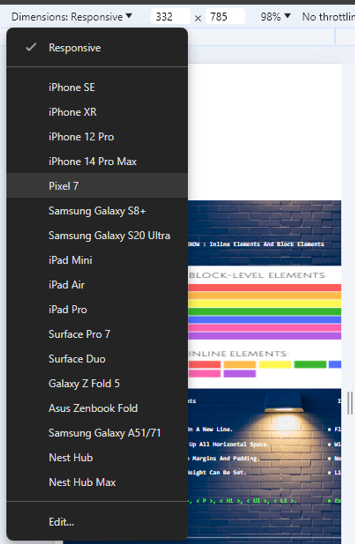
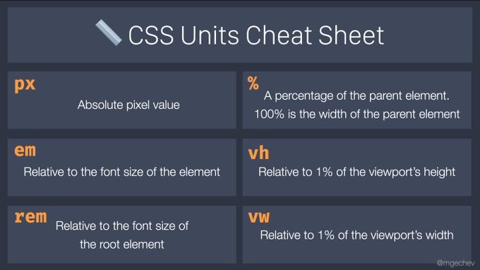
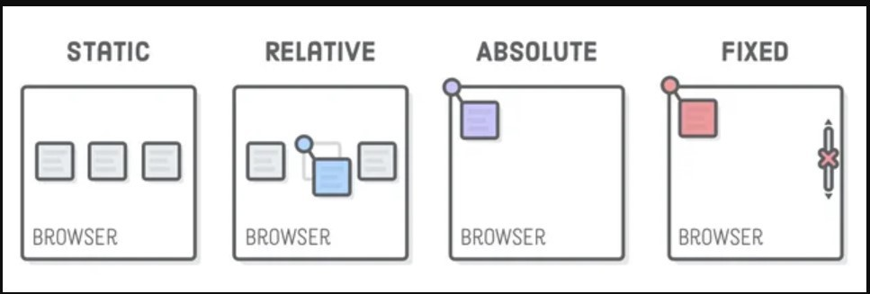
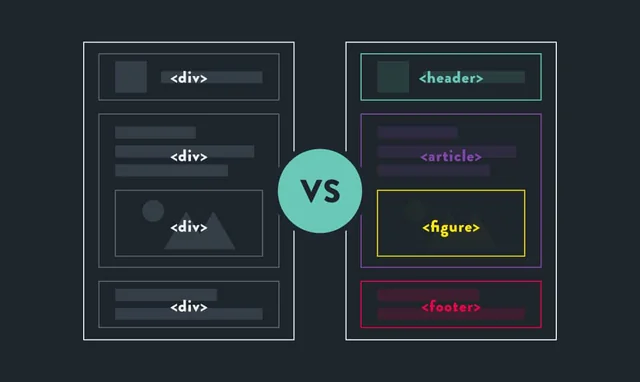
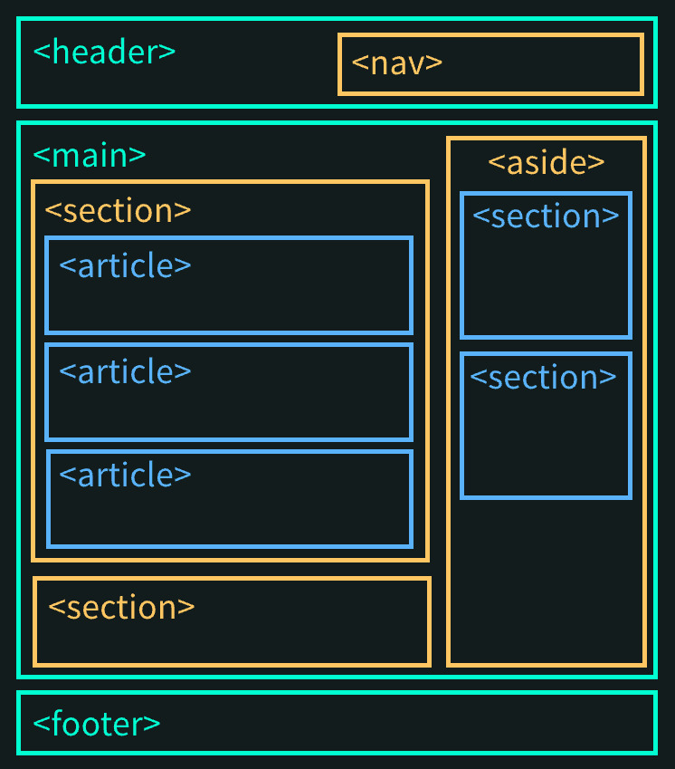

FIRST WE MUST KNOW : Inline Elements and Block Elements
 Block Elements Inline Elements
● New Line: Start on a new line. ● Flow: Stay in line with text.
● Full Width: Take up all horizontal space. ● Width: Just as wide as the content.
● Styling: Can have margins and padding. ● No Break: No new line between elements.
● Size: Width and height can be set. ● Limited Styling: Can't set size easily.
● Examples: < div >, < p >, < h1 >, < ul >, < li >. ● Examples: < span >, < a >, < strong >, < em >.
Block Elements Inline Elements
● New Line: Start on a new line. ● Flow: Stay in line with text.
● Full Width: Take up all horizontal space. ● Width: Just as wide as the content.
● Styling: Can have margins and padding. ● No Break: No new line between elements.
● Size: Width and height can be set. ● Limited Styling: Can't set size easily.
● Examples: < div >, < p >, < h1 >, < ul >, < li >. ● Examples: < span >, < a >, < strong >, < em >.
26. Display Property (Block)
This property is by default blocked, but we can change it to inline
Example :---
Box 1
Box 2
Box 1
Box 2
26. Display Property (Inline-Block) To overcome the problems of display : inline, we have :------ display : inline-block
Box 1
Box 2
26. Display Property (Inline-Block)
Sometime when we want to del;ete an element, instead of visibility : hidden (because it still take s the space) we can set :------
display : none
Box 1
Box 2
Note : Uptill now we were defining sizes in pixels i.e. "Absolute Unit" now we'll learn Relative unitsto make Responsive Websites.

1. Adapts layout for different screen sizes
2. Flexible layouts
3. Optimizes images and assets
4. Enhances user experience on mobile and desktop

28. Relative Units (Percentage)
• Relative Sizing: Facilitates dynamic sizing relative to parents.
• Adaptability: Ensures responsiveness across various screens.
• Dimensions: Quickly set width and height as a percentage.
Example:--
First Div
Second Div
28. Relative Units (EM)
• Relative Unit: Sized relative to the parent element's font size.
• Scalability: Facilitates easy scaling of elements for responsive design.
• Font Sizing: Commonly used for setting font sizes adaptively.
Example:--
This shows that the font-size of child element is dependent on parent element.
In this example child is 2em i.e. two times the parent element's font-size.
first
second
28. Relative Units (REM)
• Relative Sizing: Facilitates dynamic sizing relative to root element.
• Adaptability: Ensures responsiveness across various screens.
• Dimensions: Quickly set width and height as a percentage.
Example:----
first
second
28. Relative Units (VW/VH)
• Viewport Relative Units: Units based on viewport's width (vw) or height (vh) for responsive design.
• Responsive Layouts: Essential for creating adaptive layouts; e.g., height: 100vh for
full-screen sections.
• Element Sizing: Useful for defining heights and widths that scale with the viewport.
Example:----
First Div

• Static (default) : Elements follow the normal document flow. (top, right,
bottom, left, z-index would not work)
• Relative: Element's position adjusted from its normal position.
• Absolute: Positions element relative to the nearest positioned ancestor.
• Fixed: Element positioned relative to the viewport, does not move on scroll.
Box 1
Box 2
Box 3
Box 4
Box
Box
Box
Box
Box
Box
Box
Box
Box
29. Position Property (z index)• Stacking Order: Determines the stacking order of elements along the Z-axis.
• Position Context: Only applies to elements with position set to relative, absolute, fixed, or sticky.
• Integer Values: Accepts integer values, including negative numbers.
• Higher Values: An element with a higher z-index value appears above others.
Example:----
Z-index-2
Z-index-1
 
Semantic Tags Non-Semantic Tags
● New Line: Start on a new line. ● Flow: Stay in line with text.
● SEO: Good for search engines. ● For Styling: Used for layout.
● Accessibility: Useful for screen readers. ● No SEO: Not SEO-friendly.
● Examples: < header >, < footer >, ● Examples: < div >, < span >, < i >, < b >. < /span >
< article >, < section >, < nav >.